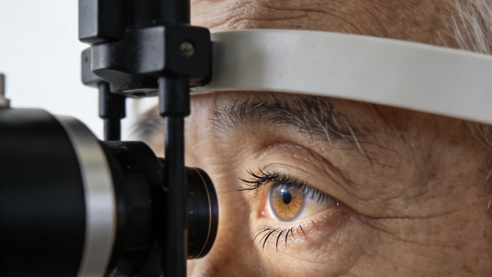
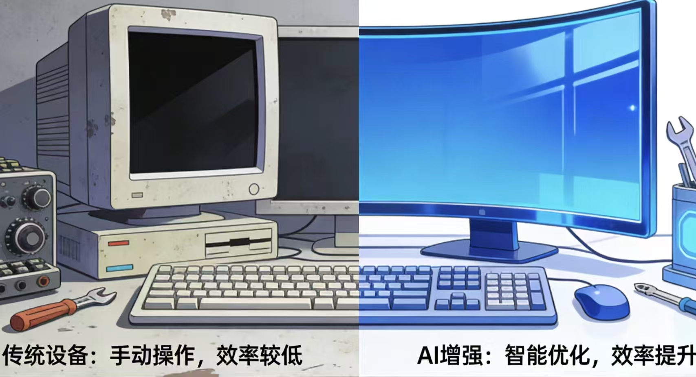
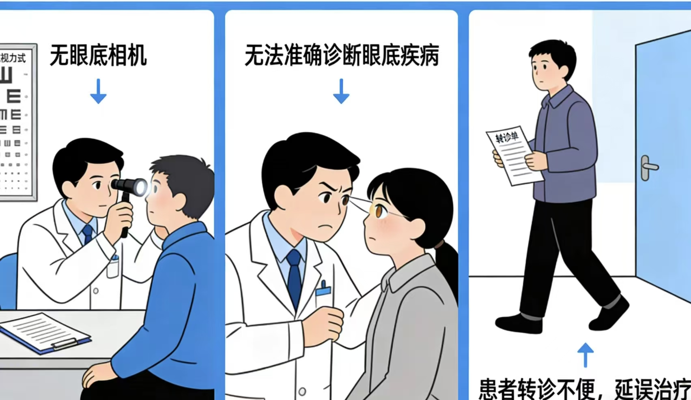
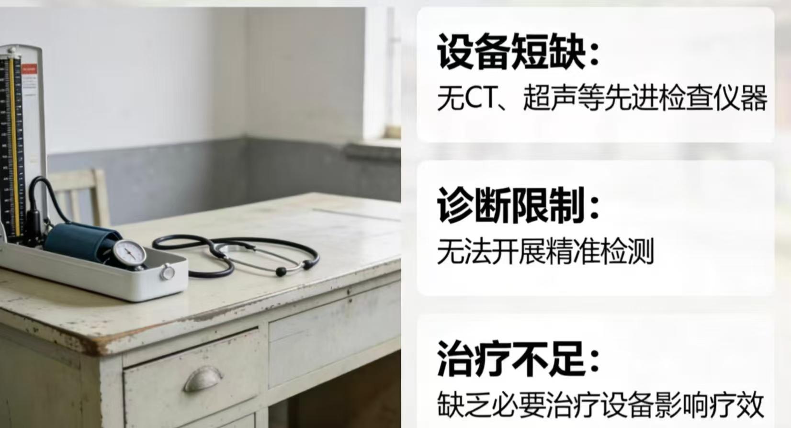
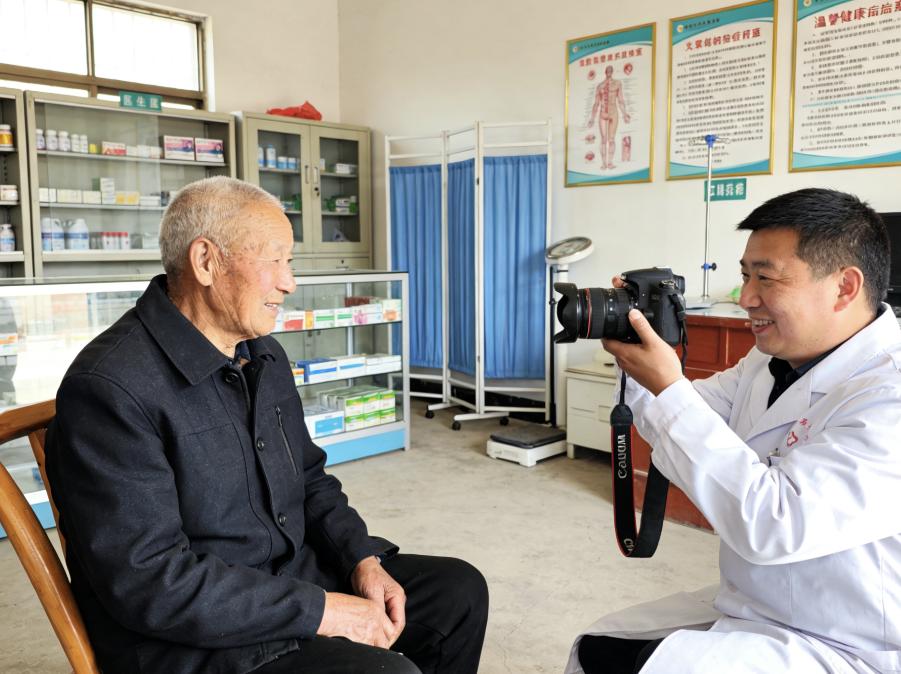
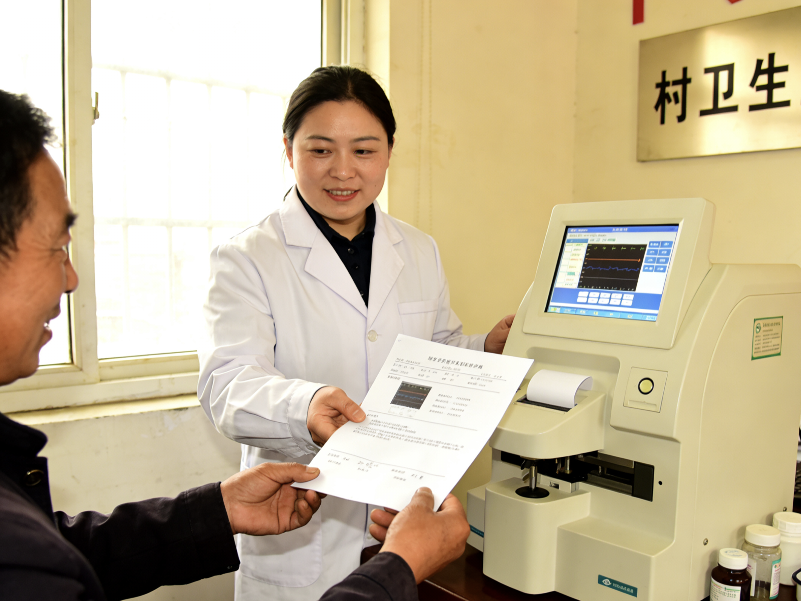

请填写昵称并选择身份，为您切换专属页面
（患者端为默认主页，医生端将跳转）
请填写以下信息，我们将安排最近的村医与您联系

糖尿病视网膜病变是糖尿病致盲主因，农村检出率 23.5%，60% 患者延误诊疗致不可逆盲，加重家庭负担，拖累基层医疗，造成沉重社会医疗成本
提示：鼠标悬浮即可静音自动播放演示视频
农村糖尿病眼病筛查面临严重的视觉与操作限制
微小病灶诊断准确率低，传统设备视野受限，早期病变难以识别
80%村卫生室无眼底相机，深部病灶活检困难，容易引发并发症
仅15%乡镇卫生院能独立诊断DR，远程协同诊疗生态缺失

AI-Enhanced View · 微小病灶精准识别

80%村卫生室无设备

仅15%卫生院能独立诊断DR
糖尿病视网膜病变（DR）是成年人致盲的首因。农村地区每10个糖尿病患者就有2~3人面临眼底病变风险，但传统筛查设备少、进城难，大多发现即晚期。
以前去县医院查眼睛，来回要一整天，还要花钱散瞳。现在村里就能查，拍个照几分钟，当场告诉我没事，心里踏实多了。
—— 大庆村
简单便捷的操作流程，让眼底筛查触手可及

'">村医协助，坐定、看镜头，非散瞳无不适
便携设备+手机AI，3秒识别病变，准确率媲美专家

'">正常/可疑/阳性，扫码即看，需转诊则一键对接县医院
四大核心优势，全方位守护您的眼健康
单次筛查仅需10~30元
医保报销70%
设备成本仅为传统1/10
村医培训一周即可熟练
全程语音引导
坐好、睁眼，像拍照一样简单
筛查下沉到村卫生室
流动筛查车进村
覆盖率从18%飙升至72%
每次结果存入"明眸云"
历次变化可对比
复诊时医生一目了然
晚期致盲风险预计降低40%以上，减少长期照护负担，节约家庭与社会成本。
*试点覆盖12个行政村，糖尿病患者主动筛查率大幅跃升，模式已在多县域复制推广。
已纳入多个县域门诊统筹，个人仅承担30%以内，低保、高龄老人免费筛查。政策东风助力“健康中国2030”。
模型轻量化＜48MB
深入12村实地访谈
三甲医院眼科专家
与县域医共体、卫健委深度合作，已申请二类医疗器械注册。
坚持记录血糖和血压，守护眼健康从日常开始
空腹正常范围：3.9-6.1 mmol/L
理想血压：<120/80 mmHg